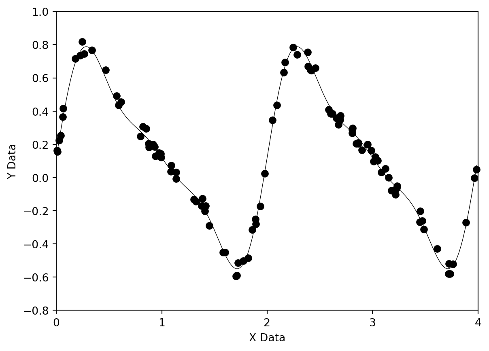
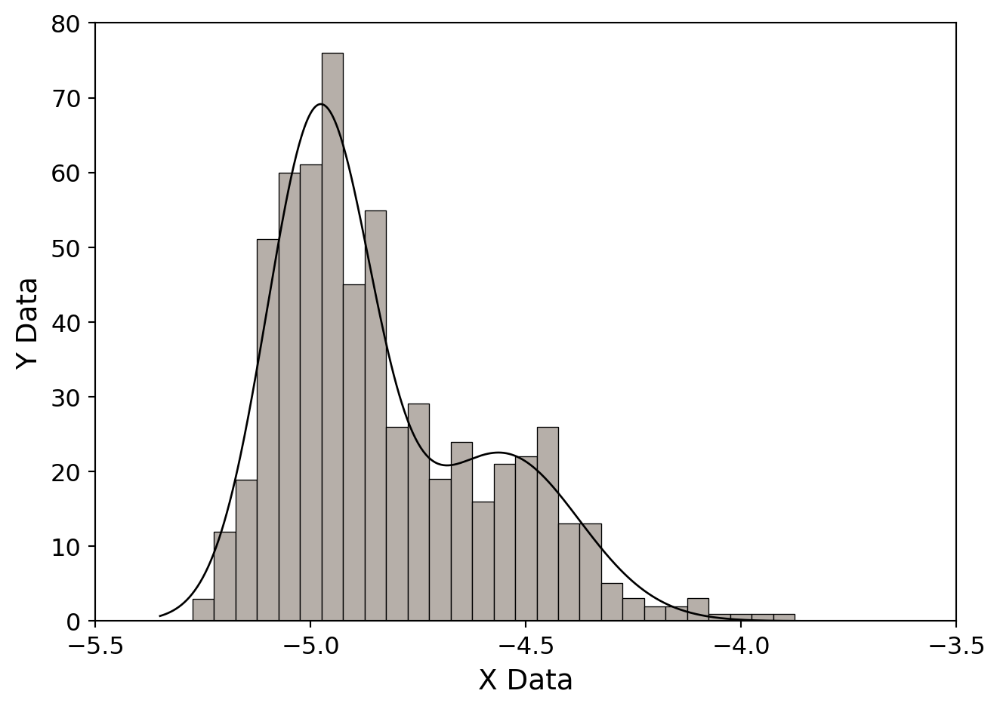

9 The Modeling of Data
9.1 Introduction
Let us suppose that we have a set of experimental data in the form of data pairs \((x_1, y_1), (x_2, y_2), \ldots, (x_n, y_n)\). When plotted, these data may appear to have a linear relationship, or a higher-order functional relationship may be evident. A reasonable next step is to try to “fit” an appropriate function to these data, as part of the analysis process. The purpose may simply be to condense and summarize the observations using a mathematical function, or it may be that a theory for the phenomenon represented by the data exists, and we are attempting to determine empirically certain parameters in this theory through the fitting process. Whichever is the case, we need to devise some criterion for selecting a best-fit function.
Traditionally, the procedure used to find this best-fit function is the process of least squares. Let us suppose that our model function is of the form:
\[ y = f(x; a_1, a_2, \ldots, a_m) \tag{9.1}\]
where the \(a_i\)’s are the fitting parameters. Then, the least squares technique finds the combination of the \(a_i\)’s such that the sum
\[ \sum_{i=1}^{N} [y_i - f(x_i; a_1, a_2, \ldots, a_m)]^2 \]
is minimized. Why do we choose this expression to minimize? Clearly, one does not want negative deviations to cancel with positive deviations, but why do we take the sum of the square of the deviations and not, for instance, the absolute value of the deviations? This is an important question. The answer is that it turns out that if the deviations (i.e. the errors) in the \(y_i\)’s are normally distributed (i.e. have a Gaussian distribution), then minimizing the sum of the square of the deviations leads to the choice for the \(a_i\)’s that is most likely to be correct. This result is derived from the theory of Maximum Likelihood Estimators. More information can be found in the book Numerical Recipes.
What if our errors are not normally distributed? This is a fairly common occurrence in experimental physics. It turns out that if the distribution of errors is only approximately Gaussian, least squares is still a good way to go. However, the least squares technique is very sensitive to data points that are very deviant (outliers). These very deviant points can exert enormous leverage over the sum of the squares of the deviations to the extent that they may even dominate the sum, leading to a fitted function which clearly does not represent the majority of the data points. In such a case, we should either eliminate the outliers using a valid (i.e. honest) statistical process, or use another fitting strategy. One such fitting strategy is called robust fitting in which it is the sum of the absolute value of the deviations which is minimized.
It should be noted that in the above discussion we have tacitly assumed that all of the errors are in the \(y_i\)’s and not in the \(x_i\)’s. This situation is often the case in experimental physics, but sometimes it turns out that both the \(x_i\)’s and the \(y_i\)’s have significant errors. In this case, we need to use a slightly different approach (see Numerical Recipes for more information).
Let us begin our discussion of the modeling of data with a review of using least squares to fit data to a straight line, and use that as a springboard to a discussion on fitting data to nonlinear functions.
9.2 Least Squares Fitting of Data to a Straight Line
Let us suppose that the y-value for each data point \((x_i, y_i)\) has its own, known, standard deviation, \(\sigma_i\). Then the expression that we wish to minimize becomes:
\[ \chi^2 = \sum_{i=1}^{N} \left( \frac{y_i - f(x_i; a_1, a_2, \ldots, a_m)}{\sigma_i} \right)^2 \]
Dividing each term in the sum by \(\sigma_i^2\) weights each data point according to its error—those data points with the smallest errors contribute the most to the sum1. If our model function is a straight line,
\[ f(x) = f(x; a, b) = a + bx \]
then the above expression becomes
\[ \chi^2(a, b) = \sum_{i=1}^{N} \left( \frac{y_i - a - bx_i}{\sigma_i} \right)^2 \tag{9.2}\]
This sum must be minimized with respect to the two parameters \(a\) and \(b\), which means that we must have
\[ 0 = \frac{\partial \chi^2}{\partial a} = -2 \sum_{i=1}^{N} \frac{y_i - a - bx_i}{\sigma_i^2} \]
\[ 0 = \frac{\partial \chi^2}{\partial b} = -2 \sum_{i=1}^{N} \frac{x_i(y_i - a - bx_i)}{\sigma_i^2} \]
if we make the following substitutions
\[ S \equiv \sum_{i=1}^{N} \frac{1}{\sigma_i^2} \qquad S_x \equiv \sum_{i=1}^{N} \frac{x_i}{\sigma_i^2} \qquad S_y \equiv \sum_{i=1}^{N} \frac{y_i}{\sigma_i^2} \]
\[ S_{xx} = \sum_{i=1}^{N} \frac{x_i^2}{\sigma_i^2} \qquad S_{xy} = \sum_{i=1}^{N} \frac{x_i y_i}{\sigma_i^2} \]
we derive the following equations
\[ aS + bS_x = S_y \]
\[ aS_x + bS_{xx} = S_{xy} \]
which may be written as a matrix equation
\[ \begin{pmatrix} S & S_x \\ S_x & S_{xx} \end{pmatrix} \begin{pmatrix} a \\ b \end{pmatrix} = \begin{pmatrix} S_y \\ S_{xy} \end{pmatrix} \]
To solve this equation, we need to find the inverse of the matrix
\[ \begin{pmatrix} S & S_x \\ S_x & S_{xx} \end{pmatrix}^{-1} = \begin{pmatrix} S_{xx}/\Delta & -S_x/\Delta \\ -S_x/\Delta & S/\Delta \end{pmatrix} \tag{9.3}\]
(where \(\Delta = SS_{xx} - (S_x)^2\) is the determinant of the matrix) and multiply through by this inverse matrix. This leads to the well-known linear-least-squares equations:
\[ a = \frac{S_{xx}S_y - S_x S_{xy}}{\Delta} \tag{9.4}\]
\[ b = \frac{SS_{xy} - S_x S_y}{\Delta} \tag{9.5}\]
Before we can say that we are done, we must estimate the errors in the fitted parameters \(a\) and \(b\). The theory of the propagation of errors tells us that the variance \(\sigma_f^2\) in the value of any function \(f\) is given by
\[ \sigma_f^2 = \sum_{i=1}^{N} \sigma_i^2 \left( \frac{\partial f}{\partial y_i} \right) \tag{9.6}\]
We may derive the following equations directly from the solution (Equation 9.4 and Equation 9.5)
\[ \frac{\partial a}{\partial y_i} = \frac{S_{xx} - S_x x_i}{\sigma_i^2 \Delta} \]
\[ \frac{\partial b}{\partial y_i} = \frac{S x_i - S_x}{\sigma_i^2 \Delta} \]
Summing over the points as in Equation 9.6, we derive for the variances:
\[ \sigma_a^2 = S_{xx}/\Delta \]
\[ \sigma_b^2 = S/\Delta \]
Note that the right-hand sides of these two expressions are the diagonal entries in the inverse matrix (Equation 9.3). To derive the standard errors for \(a\) and \(b\), we must multiply the variances above by the factor
\[ s^2 = \chi^2/(N - 2) \]
where \(\chi^2\) is calculated from Equation 9.2 using the calculated values of \(a\) and \(b\) and the factor \(N - 2\) comes from the number of degrees of freedom; \(N\) is the total number of points used to determine the 2 parameters \(a\) and \(b\). Thus, the standard errors for \(a\) and \(b\) will be given by:
\[ \text{S.E.}(a) = s\sigma_a \]
\[ \text{S.E.}(b) = s\sigma_b \]
NoteExercise 9.1
Write a program implementing the above equations to fit a straight line to the data in the datafile data91.dat. Your program should estimate the parameters \(a\) and \(b\) and their standard errors.
NoteExercise 9.2
Write a function which will multiply an \(N \times M\) matrix with a vector of length \(M\) to give a vector of length \(N\).
NoteExercise 9.3
Let us suppose we are confronted with a matrix equation of the form
\[ \mathbf{A} \cdot \mathbf{x} = \mathbf{b} \tag{9.7}\]
where \(\mathbf{A}\) is an \(N \times N\) matrix, and \(\mathbf{b}\) is an input vector of dimension \(N \times 1\). The \(\mathbf{x}\) vector is the solution to this matrix equation. To find \(\mathbf{x}\), we must find \(\mathbf{A}^{-1}\), and then we have
\[ \mathbf{x} = \mathbf{A}^{-1} \cdot \mathbf{b} \]
Now, imagine that both \(\mathbf{b}\) and \(\mathbf{x}\) are \(N \times M\) matrices, then we may regard Equation 9.7 as a set of M simultaneous matrix equations. There is a C-function, found in comphys.c, which will solve this equation for you. It is declared as
void gaussj(float **a, int n, float **b, int m)and comes from the Numerical Recipes book. Its description is as follows:
“Linear equation solution by Gauss-Jordan elimination. a[1..n][1..n] is the input matrix. b[1..n][1..m] is input containing the m right-hand side vectors. On output, a is replaced by its matrix inverse, and b is replaced by the corresponding set of solution vectors.”
Write a short program using gaussj which will solve the following matrix equation:
\[ \begin{pmatrix} 1 & 5 & 3 \\ 2 & 1 & 9 \\ 3 & 8 & 8 \end{pmatrix} \begin{pmatrix} x_1 \\ x_2 \\ x_3 \end{pmatrix} = \begin{pmatrix} 5 \\ 2 \\ 1 \end{pmatrix} \]
9.3 General Linear Least Squares
To generalize our discussion in the last section, let us go back to Equation 9.1 and suppose that our model function \(f\) may be written as a linear combination of a set of \(m\) linearly independent functions2 \(X_i(x)\) such that
\[ y(x) = \sum_{k=1}^{m} a_k X_k(x) \tag{9.8}\]
where the functions \(X_i(x)\) are arbitrary fixed functions of \(x\), called the basis functions. We note that the functions could be \(1, x, x^2, \ldots, x^{m-1}\) in which case \(f(x)\) is simply a polynomial of degree \(m - 1\) in \(x\). However, the \(X_i(x)\) can be any set of linearly independent functions of \(x\), such as, for instance, sines and cosines.
Our linear least squares expression for \(\chi^2\) now becomes:
\[ \chi^2 = \sum_{i=1}^{N} \left[ \frac{y_i - \sum_{k=1}^{m} a_k X_k(x_i)}{\sigma_i} \right]^2 \]
The problem of finding the set of \(a_k\)’s such that they minimize the above expression for \(\chi^2\) is called the problem of general linear least squares, not because the \(X_k(x)\)’s are linear (they generally are not!), but because the \(a_k\)’s appear in Equation 9.8 in a linear way.
We proceed to solve the problem of general linear least squares in a way analogous to section 9.2. We minimize \(\chi^2\) individually with respect to each of the \(a_k\)’s, yielding the following equations:
\[ 0 = \sum_{i}^{N} \frac{1}{\sigma_i^2} \left[ y_i - \sum_{j=1}^{m} a_j X_j(x_i) \right] X_k(x_i) \quad k = 1, \ldots, m \tag{9.9}\]
If we define a matrix \(\mathbf{A}\) with entries
\[ A_{kj} = \sum_{i=1}^{N} \frac{X_j(x_i) X_k(x_i)}{\sigma_i^2} \]
and a vector \(\mathbf{b}\) with entries
\[ b_k = \sum_{i=1}^{N} \frac{y_i X_k(x_i)}{\sigma_i^2} \]
then Equation 9.9 may be written as
\[ \mathbf{A} \cdot \mathbf{a} = \mathbf{b} \]
where \(\mathbf{a}\) has the entries \(a_1, a_2, \ldots a_m\). We may thus determine \(\mathbf{a}\) by inverting \(\mathbf{A}\).
Of course, we are not finished until we have determined the errors for each of the \(a_k\)’s. It turns out, in analogy with section 9.2, that the variances for the \(a_k\)’s are given by the diagonal entries of the inverse matrix \(\mathbf{A}^{-1}\), also called the covariant matrix. To derive the standard errors of the coefficients \(a_k\), we must multiply these variances by the factor
\[ s^2 = \chi^2/(N - M) \]
where \(M\) is the number of coefficients, and then take the square root. The number \(N - M\) is the number of degrees of freedom.
NoteExercise 9.4
The datafile data94.dat contains \(x, y\) data which can be fit with a polynomial. Write a program which will fit these data to a polynomial of degree \(M - 1\), where \(M - 1\) is a user input. The program should output the \(M\) coefficients and their errors. Determine the best value of the degree of the polynomial for this dataset by trial and error. Hint: the best polynomial will have a small value for \(\chi^2\), but not necessarily the smallest value. If increasing the degree of the polynomial only marginally improves the value for \(\chi^2\), it may not represent a better fit. You also need to look at the standard errors of the coefficients. If the absolute value of a coefficient is no greater than 3 times its error, it is not statistically significant, i.e. it is not statistically different from zero.
NoteExercise 9.5
The datafile data95.dat contains \(x, y\) data which can be fit with a harmonic sine series of the form:
\[ y = a_1 + \sum_{n=2}^{4} a_n \sin[(n-1)\pi x] \]
Determine the \(a_n\)’s and their errors for this dataset.
9.4 Nonlinear Least Squares (Levenberg-Marquardt)
Forget about least squares for a moment, and think about a function \(f\), defined in an m-dimensional space, which has a minimum. If we consider some point \(\mathbf{P}\), and take that point as the origin of the coordinate system, then we can expand this function \(f\) about that point in a Taylor series:
\[ f(\mathbf{x}) = f(\mathbf{P}) + \sum_i \frac{\partial f}{\partial x_i} x_i + \frac{1}{2} \sum_{i,j} \frac{\partial^2 f}{\partial x_i \partial x_j} x_i x_j + \ldots \]
where \(\mathbf{x}\) is the vector \((x_1, x_2, \ldots, x_m)\) and the derivatives are evaluated at point \(\mathbf{P}\). We note the above expression may be written in the form
\[ f(\mathbf{x}) \approx c - \mathbf{b} \cdot \mathbf{x} + \frac{1}{2} \mathbf{x} \cdot \mathbf{A} \cdot \mathbf{x} \]
where
\[ c \equiv f(\mathbf{P}) \quad \mathbf{b} \equiv -\nabla f|_\mathbf{P} \quad [\mathbf{A}]_{ij} \equiv \left. \frac{\partial^2 f}{\partial x_i \partial x_j} \right|_\mathbf{P} \]
The matrix \(\mathbf{A}\) is called the Hessian matrix of the function at \(\mathbf{P}\). This mathematical expression is called a quadratic form.
Now, in this approximation, it is easy to show that
\[ \nabla f = \mathbf{A} \cdot \mathbf{x} - \mathbf{b} \]
but, of course, at the minimum of this function, this gradient vanishes, and thus the position of the minimum is given by solving the matrix equation
\[ \mathbf{A} \cdot \mathbf{x} = \mathbf{b} \]
Now, shift your mind back to the problem of Least Squares. Let us suppose that we have a function which depends on parameters \(a_1, a_2, \ldots a_m\) in a non-linear way. Unfortunately, we cannot proceed in precisely the way we did in section 9.3, but we can still write down the same expression for \(\chi^2\) which we wish to minimize, that is,
\[ \chi^2 = \sum_{i=1}^{N} \left( \frac{y_i - f(x_i; a_1, a_2, \ldots, a_m)}{\sigma_i} \right)^2 \]
where the \(x_i\)’s and the \(y_i\)’s are, of course, the experimental data points we wish to fit with the function \(f\). We may regard \(\chi^2\) as a non-linear function of the \(a_i\)’s and write, according to the short discussion above,
\[ \chi^2(\mathbf{a}) \approx \gamma - \mathbf{d} \cdot \mathbf{a} + \frac{1}{2} \mathbf{a} \cdot \mathbf{D} \cdot \mathbf{a} \]
If this is a good approximation, we may jump from a set of trial parameters \(\mathbf{a}_\text{cur}\) to the minimum in one step using
\[ \mathbf{a}_\text{min} = \mathbf{a}_\text{cur} + \mathbf{D}^{-1} \cdot [-\nabla \chi^2(\mathbf{a}_\text{cur})] \]
as we saw above. If, however, the quadratic form is not a good approximation to \(\chi^2\), then we can at least take a step downhill along the gradient toward the minimum (this is called the steepest descent method):
\[ \mathbf{a}_\text{next} = \mathbf{a}_\text{cur} - \text{constant} \times \nabla \chi^2(\mathbf{a}_\text{cur}) \]
where the constant is small enough so that one does not overshoot the minimum.
The Levenberg-Marquardt Method applies both the inverse-Hessian method and the steepest descent method to find the minimum of \(\chi^2\). Far from the minimum, where the quadratic form is not a good approximation, the Levenberg-Marquardt Method uses the method of steepest descent, but shifts smoothly over to the inverse-Hessian method as the minimum is getting near, and the quadratic form is a better approximation. The Levenberg-Marquardt Method also allows one to hold some of the \(a_i\)’s fixed, and to vary the others. This method is implemented in the Numerical Recipes function mrqmin (found in comphys.c) which is declared in the following way:
void mrqmin(float x[], float y[], float sig[], int ndata, float a[],
int ia[], int ma, float **covar, float **alpha, float *chisq, void
(*funcs)(float, float [], float *, float [], int), float *alambda)and comes with the directions: “Levenberg-Marquardt method, attempting to reduce the value \(\chi^2\) of a fit between a set of data points x[1..ndata], y[1..ndata] with individual standard deviations sig[1..ndata] and a nonlinear function dependent on ma coefficients a[1..ma]. The input array ia[1..ma] indicates by nonzero entries those components of a that should be fitted for, and by zero entries those components that should be held fixed at their input values. The program returns current best-fit values for the parameters a[1..ma] and \(\chi^2\) = chisq. The arrays covar[1..ma][1..ma], alpha[1..ma][1..ma] are used as working space during most iterations. Supply a routine funcs(x,a,yfit,dyda,ma) that evaluates the fitting function yfit, and its derivatives dyda[1..ma] with respect to the fitting parameters a at x. On the first call provide an initial guess for the parameters a, and set alambda < 0 for initialization (which then sets alambda = .001). If a step succeeds chisq becomes smaller and alambda decreases by a factor of 10. If a step fails alambda grows by a factor of 10. You must call this routine repeatedly until convergence is achieved. Then, make one final call with alambda = 0, so that covar[1..ma][1..ma] returns the covariance matrix, and alpha the curvature matrix. (Parameters held fixed will return zero covariances).”
The constant alambda in the above discussion refers to the constant in the method of steepest descent.
The best way to explain how to use mrqmin is with an example. The following figure shows a histogram of data. The underlying theory is that the distribution of points in this diagram is a double Gaussian. We would like to fit these data to a function that looks like:
\[ f(x; a_1, \ldots, a_6) = a_1 \exp\left[ -\left( \frac{x - a_2}{a_3} \right)^2 \right] + a_4 \exp\left[ -\left( \frac{x - a_5}{a_6} \right)^2 \right] \]
To apply the Levenberg-Marquardt Method, we must obtain the derivatives of \(f\) with respect to all of the \(a_i\)’s. These derivatives are as follows:
\[ \begin{aligned} \frac{\partial f}{\partial a_1} &= \exp\left[ -\left( \frac{x - a_2}{a_3} \right)^2 \right] \\ \frac{\partial f}{\partial a_2} &= 2a_1 \left( \frac{x - a_2}{a_3} \right) \exp\left[ -\left( \frac{x - a_2}{a_3} \right)^2 \right] \\ \frac{\partial f}{\partial a_3} &= 2a_1 \left( \frac{x - a_2}{a_3} \right)^2 \exp\left[ -\left( \frac{x - a_2}{a_3} \right)^2 \right] \end{aligned} \]
and similarly for \(a_4\), \(a_5\) and \(a_6\).
The C-code which performs this miracle is as follows:
#include <stdio.h>
#include <math.h>
#include "comphys.h"
#define NDATA 2000
#define MA 6
void fgauss(float x, float a[], float *y, float dyda[], int na);
int main()
{
float *x,*y,*sig,**covar,**alpha,*a,chisq,ochisq,alambda;
int *ia,ma;
char name[80],initname[80],outname[80];
FILE *in,*init,*out;
int i,k,ndata;
x = vector(1,NDATA);
y = vector(1,NDATA);
sig = vector(1,NDATA);
a = vector(1,MA);
covar = matrix(1,MA,1,MA);
alpha = matrix(1,MA,1,MA);
ia = ivector(1,MA);
/* Datafile contains data which are to be fitted to a double
Gaussian. Initial parameters file contains rough estimates
of Gaussian parameters. */
ma = MA;
printf("Enter name of datafile > " );
scanf("%s",name);
if((in = fopen(name,"r")) == NULL)
nrerror("Cannot find input file");
printf("Enter initial parameters datafile > ");
scanf("%s",initname);
if((init = fopen(initname,"r")) == NULL)
nrerror("Cannot find initial parameters file");
printf("Enter output file > ");
scanf("%s",outname);
out = fopen(outname,"w");
/* Reads in data from datafile. Defines sigma errors by taking
square roots of y-values, as these are counts. Adds a small
number (0.1) so that zero values of y will not have 0 errors */
k = 1;
while(fscanf(in,"%f %f",&x[k],&y[k]) != EOF) {
sig[k] = sqrt(y[k]) + 0.1;
k++;
}
ndata = k-1;
/* Reads in initial estimates for parameters */
for(i=1;i<=4;i+=3) fscanf(init,"%f,%f,%f",&a[i],&a[i+1],&a[i+2]);
/* We are fitting all parameters a[1] .. a[6], so we fill up all
entries in ia[] with 1's */
for(i=1;i<=MA;i++) ia[i] = 1;
/* Initializing mrqmin using a negative value of alambda.
Note we are passing the function fgauss to mrqmin. See
below. */
alambda = -1.0;
chisq = 0.0;
mrqmin(x,y,sig,ndata,a,ia,ma,covar,alpha,&chisq,fgauss,&alambda);
ochisq = chisq + 2.0;
/* Iterating with mrqmin until relative change in chisq is less
than 0.001 */
while(fabs((ochisq - chisq)/ochisq) > 0.001 ) {
ochisq = chisq;
mrqmin(x,y,sig,ndata,a,ia,ma,covar,alpha,&chisq,fgauss,&alambda);
}
/* Here we run mrqmin one more time with alambda = 0.0 to get
covariant matrix, in case we want the errors */
alambda = 0.0;
mrqmin(x,y,sig,ndata,a,ia,ma,covar,alpha,&chisq,fgauss,&alambda);
/* Print out the results (the a's) along with the errors (the
squareroots of the diagonal members of the covariant matrix
divided by the number of degrees of freedom). */
for(i=1;i<=MA/2+1;i+=MA/2) fprintf(out,"%f %f\n%f %f\n%f %f\n",
a[i],sqrt(chisq*covar[i][i]/(float)(ndata-MA)),
a[i+1],sqrt(chisq*covar[i+1][i+1]/(float)(ndata-MA)),
a[i+2],sqrt(chisq*covar[i+2][i+2])/(float)(ndata-MA));
return(0);
}
/* For a given value of x, and input parameters a[], this function
returns the resulting value of y and the vector dyda[] which
contains the derivatives of y with respect to all of the a[]
parameters */
void fgauss(float x, float a[], float *y, float dyda[], int na)
{
int i;
float fac,ex,arg;
*y = 0.0;
for(i=1;i<=na-1;i+=3) {
arg = (x-a[i+1])/a[i+2];
ex=exp(-arg*arg);
fac=a[i]*ex*2.0*arg;
*y += a[i]*ex;
dyda[i]=ex;
dyda[i+1]=fac/a[i+2];
dyda[i+2]=fac*arg/a[i+2];
}
return;
}
NoteExercise 9.6
Using the data in the file decay.out (see chapter 6), write a program which uses the Levenberg-Marquardt method to fit the four parameters \(A\), \(\gamma\), \(B\) and \(C\). Compare the values you get with the Simplex and Powell methods.
If individual errors \(\sigma_i\) are not given or specified, one can set \(\sigma_i = 1\) in this and all equations in this chapter.↩︎
A set of \(m\) functions, \(X_i(x)\) is called linearly independent if no function \(X_j(x)\) in that set may be expressed as a linear combination of the other functions in that set. Thus, the set \(1, x, x^2\) is a linearly independent set, as, for instance, \(x\) may not be expressed as a sum of \(1\) and \(x^2\).↩︎